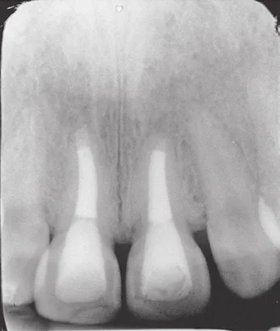
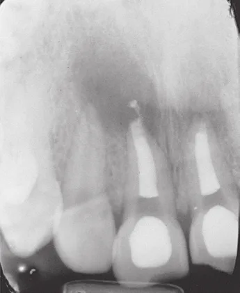

نسخه استخراجشده؛ ترجمه یا تأیید علمی انجام نشده است. وضعیت: captured
اپکسوژنز — پالپ زنده است. با حفظ آن، ریشه به رشد طبیعی خود ادامه میدهد: هم بلندتر میشود و هم دیوارهاش ضخیمتر.
اپکسیفیکیشن — پالپ نکروز شده. دیگر سازندهای در کار نیست؛ تنها کاری که میشود کرد، ساختن یک سد در انتهای ریشه است تا بتوان کانال را پر کرد.
پیامد این تفاوت: در اپکسوژنز ریشه رشد میکند؛ در اپکسیفیکیشن فقط بسته میشود و دیواره برای همیشه نازک میماند.
پس هر تلاشی برای حفظ پالپ زنده، در واقع تلاش برای رسیدن به اپکسوژنز است.
روش سنتی — کلسیم هیدروکساید: تعویض مکرر ماده طی ۶ تا ۱۸ ماه تا تشکیل سد کلسیفیه.
عیبهایش: جلسات زیاد، وابستگی به همکاری طولانی، و مهمتر از همه، تماس طولانی کلسیم هیدروکساید عاج را شکنندهتر میکند.
روش امروزی — سد آپیکالی MTA: در یک یا دو جلسه، سدی به ضخامت حدود ۴ میلیمتر در انتهای ریشه گذاشته و بقیهی کانال پر میشود.
محدودیت مشترک هر دو: هیچکدام دیواره را ضخیم نمیکنند. دندان با ریشهی نازک باقی میماند و خطر شکستگی تا سالها همراهش است.


نوع سؤال: ساخت کلمه · 8 خانه
حروف منبع: ژ · و · ا · ن · س · پ · ک · ز